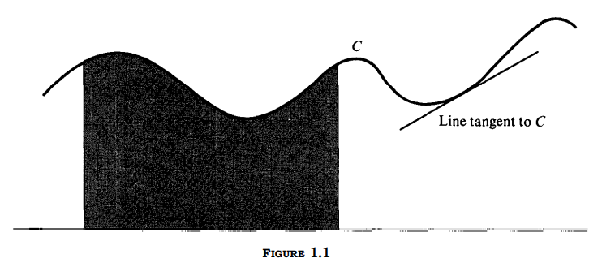

"이제 나는
어떠한 저항도 하지 않기로 결심했다."
1914년 8월 26일, 비트겐슈타인.
논리학
수학
물리학
전산학
컴퓨터공학
매체학
음악
철학
지난 세기 동안 과학 및 기술 분야에서 일어난 발전은 대부분 수학의 발전에서 비롯한다고 볼 수 있다. 적분과 미분으로 알려진 수학의 한 갈래는
물리학, 천문학, 공학, 화학, 지질학, 생물학, 최근에는 사회과학을 비롯한 다양한 분야에서 발생하는 다양한 문제를 푸는 자연스러운 동시에
강력한 도구로 기능한다.
미적분의 방법으로 다룰 수 있는 문제가 얼마나 다양한지 보여주고자, 연습문제에서 예제 몇 개를 가져왔다.
발사 이후 로켓이 지구로 돌아오지 않으려면, 어느 속도로 로켓이 발사되어야 하는가? 주어진 둘레 $L$의 모든 이등변 삼각형을 전부 덮을 수 있는 원반
가운데 가장 작은 것의 반지름은 몇인가? 반지름 $r$의 구멍이 구체의 중심에 뚫렸다면, 구체에서 사라진 물질의 부피는 몇인가? 균주가 지금 규모에
상응하는 비율로 자라고 개체 수가 한 시간마다 두 배로 늘어난다면, 두 시간이 지났을 때는 균주가 얼마나 자랐을 것인가? 10파운드의 힘이 탄성 스프링을
1인치만큼 늘린다면, 스프링을 1푸트 늘리기 위해서는 어느 정도의 작업이 요구되는가?
다양한 분야에서 가져온 이들 예시는 미적분의 다소 일상적인 응용을 통해서 답할 수 있는 기술적 물음을 묘사한다.
미적분은 기술적 도구 그 이상으로, 지금껏 사고하는 인간의 구미를 당긴 짜릿하고 즐거운 발상의 모음이다. 여기서 발상이란 속도, 면적, 용량,
생장률, 연속성, 접선(接線, tangent line ), 또 다양한 분야의 개념들에 관한 것이다. 미적분은 우리에게 멈출 것을, 그런 다음 이들 개념에
관해 숙고할 것을 강제한다. 이 주제에서 또 다른 주목할만한 점은 바로 그 통합력(unifying power)이다. 이들 발상은 대부분 정식화 가능하며, 그렇기에
기하학적 본성의 특수 문제들을 둘러싼다. 우리는 이제 이들 문제들의 간략한 기술(description)로 돌아갈 것이다.
그림 1.1에서 보이는 곡선 $C$를 볼 것. 우리는 이 곡선이 모든 수직선이 적어도 한 번은 교차하는 속성을 갖는다고 가정한다. 그림에서 색칠된 부분은
곡선 $C$ 밑, 수평선 위, 두 개의 평행한 수직선 사이의 점들로 구성된다. 미적분의 첫 번째 근본 문제는 다음과 같다. 색칠된 구역의
면적을 재는 숫자를 대입하는 것.
이제 곡선에 접하게 그려진 선을 볼 것. [미적분의] 두 번째 근본 문제는 다음처럼 표현될 수 있을 것이다. 이 선의 기울기를 재는 숫자를
대입하는 것

기본적으로, 미적분은 이들 두 특수 문제의 엄밀한 정식화에 관한 것이다. 이로 인해 면적과 접선 그리고 주어진 구역의 면적이나 주어진 접선의 기울기를
계산한다는 것의 개념을 정의할 수 있다. 적분은 면적의 문제를 다룰 것이며 1장에서 논의된다. 미분은
접선의 문제를 다룰 것이며 4장에서 소개된다.
미적분 연구는 확실한 수학적 배경을 요구한다. 이 장은 이런 배경 내용을 다루며 네 부분으로 나뉜다.
1부는 역사적 관점을 제공한다.
2부는 집합론의 표기법과 용어 일부를 논의한다.
3부는 실수계를 다룬다.
4부는 수학적 귀납법과 합 표기를 다룬다.
독자가 이들 주제에 익숙하다면 바로 1장부터 읽어도 좋다.
그게 아니라면, 1장을 읽기 전에 서설의 이들 주제에 익숙해질 필요가 있다.